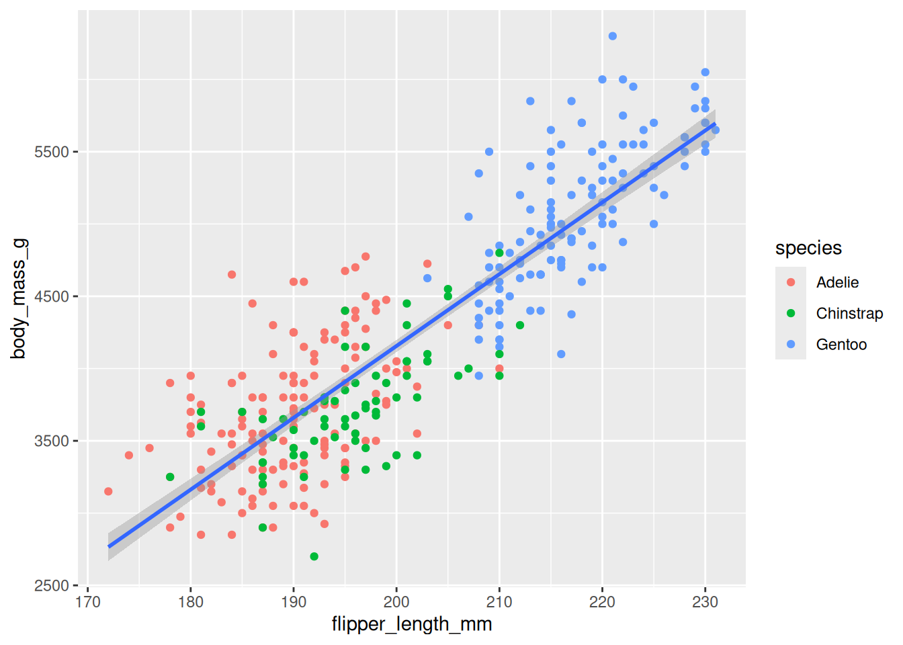
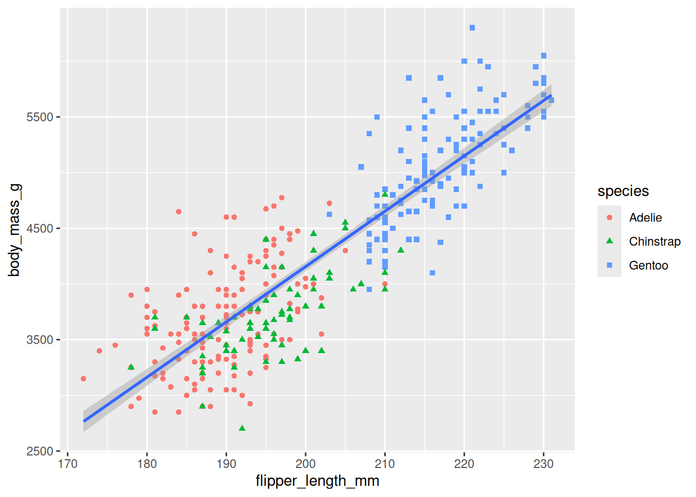

Data Visualization
9.1 Introduction
This page introduces the plot creation vocabulary step by step
9.2 Plot Creation Process
9.2.1 Load Dataset
The penguins dataset from the palmerpenguins package will be used for plotting. Typically, the package is loaded using the library function as shown in the code chunk below. However, a better approach is the one outlined in ?sec-packages.
Explore the dataset
help(penguins)Explore the dataset differently
dplyr::glimpse(penguins)Rows: 344
Columns: 8
$ species <fct> Adelie, Adelie, Adelie, Adelie, Adelie, Adelie, Adel…
$ island <fct> Torgersen, Torgersen, Torgersen, Torgersen, Torgerse…
$ bill_length_mm <dbl> 39.1, 39.5, 40.3, NA, 36.7, 39.3, 38.9, 39.2, 34.1, …
$ bill_depth_mm <dbl> 18.7, 17.4, 18.0, NA, 19.3, 20.6, 17.8, 19.6, 18.1, …
$ flipper_length_mm <int> 181, 186, 195, NA, 193, 190, 181, 195, 193, 190, 186…
$ body_mass_g <int> 3750, 3800, 3250, NA, 3450, 3650, 3625, 4675, 3475, …
$ sex <fct> male, female, female, NA, female, male, female, male…
$ year <int> 2007, 2007, 2007, 2007, 2007, 2007, 2007, 2007, 2007…9.2.2 Load Plotting Package
The ggplot2 package will be used for plotting. The package is typically loaded using the library function as shown in the code chunk below. However, a better approach is the one outlined in ?sec-packages.
9.2.3 Create ggplot object
Create an empty canvas by instantiating a ggplot object using the ggplot() function.
ggplot()
9.2.4 Link Dataset
Link the dataset with the instantiated ggplot object using the data parameter.
ggplot(data = penguins)
9.2.5 Map Two Variables
Specify which of the variables in the dataset will be used as the plot aesthetics (visual properties) using the mapping argument done via the aes() function.

9.2.6 Display Data
Specify how the data (observations) will be represented geometrically on the plot, eg, bars, points, or line. The functions starting with geom_ is used for this purpose. These functions add layer of the selected geometric object to the plot.
ggplot(data = penguins,
mapping = aes(x = flipper_length_mm, y = body_mass_g)) +
geom_point()9.2.7 Map Third Variables
Other variables in the dataset can be linked to plot aesthetics (visual properties) using the mapping argument done via the aes() function.
ggplot(
data = penguins,
mapping = aes(x = flipper_length_mm, y = body_mass_g, color = species)
) +
geom_point()9.2.8 Display Three Trendlines
More geometric representations for the data can be specified using the functions starting with geom_ which will add layer of the selected geometric object to the plot.
ggplot(
data = penguins,
mapping = aes(x = flipper_length_mm, y = body_mass_g, color = species)
) +
geom_point() +
geom_smooth(method = "lm")9.2.9 Display One Trendline
The aesthetic mapping defined in the ggplot() function is global meaning that all the geom_() functions inherit it. However, the aesthetic mapping defined in the geom_() functions are local, ie, not shared with other gemo_() functions.
ggplot(data = penguins,
mapping = aes(x = flipper_length_mm, y = body_mass_g)) +
geom_point(mapping = aes(color = species)) +
geom_smooth(method = "lm")
9.2.10 Map One Variable Twice
We can link the same variable to multiple plot aesthetics (visual properties) using the mapping parameter done via the aes() function.
ggplot(data = penguins,
mapping = aes(x = flipper_length_mm, y = body_mass_g)) +
geom_point(mapping = aes(color = species, shape = species)) +
geom_smooth(method = "lm")
9.2.11 Fix Labels
The labs() function can be used to make the plot more accessible. The function will add new layer to the plot and the following items can be added to the layer using the corresponding parameters
- a title using the
titleparameter - a sub-title, if necessary, using the
subtitleparameter - x-axis title using the
xparameter - y-axis title using the
yparameter - data-series label or legend using the
colorand/orshapeparameters
ggplot(data = penguins,
mapping = aes(x = flipper_length_mm, y = body_mass_g)) +
geom_point(mapping = aes(color = species, shape = species)) +
geom_smooth(method = "lm") +
labs(
title = 'Palmer Three Species Penguins',
subtitle = 'The flipper length has a moderattly strong positive linear relationship with the body mass',
x = 'Fliper length (mm)',
y = 'Body mass (g)',
shape = 'Species',
color = 'Species'
)Other types of texts can be added using other functions. The other types of texts are:
- x-axis label
- y-axis label
- data labels, if necessary
- annotation for interesting or important data, if exist
9.2.12 Ensure Color-blind Safe
Make the plot more color-blind safe by using the scale_color_colorblind() function from the ggthemes package which will add new layer to the plot.
ggplot(data = penguins,
mapping = aes(x = flipper_length_mm, y = body_mass_g)) +
geom_point(mapping = aes(color = species, shape = species)) +
geom_smooth(method = "lm") +
labs(
title = 'Palmer Three Species Penguins',
subtitle = 'The flipper length has a moderattly strong positive linear relationship with the body mass',
x = 'Fliper length (mm)',
y = 'Body mass (g)',
shape = 'Species',
color = 'Species'
) +
scale_color_colorblind()9.2.13 Can Call Implicitly
The first one or two arguments of functions are so important that scientists should know them by heart. Hence, to save some typing, the name of these arguments are usually omitted and only the values assigned to them are kept, ie, the names becomes implicit and no more explicit. Hence, the above call can be written as follows–the arguments data and mapping were omitted.
ggplot(penguins, aes(x = flipper_length_mm, y = body_mass_g)) +
geom_point(aes(color = species, shape = species)) +
geom_smooth(method = "lm") +
labs(
title = 'Palmer Three Species Penguins',
subtitle = 'The flipper length has a moderattly strong positive linear relationship with the body mass',
x = 'Fliper length (mm)',
y = 'Body mass (g)',
shape = 'Species',
color = 'Species'
) +
scale_color_colorblind()
9.2.14 Use Pipe Operator
The pipe operator \> (shortcut: Ctrl+M) can be used to make the code tidy. The above code can be re-written as follow–notice the dataset was pulled before the call to the ggplot() function.
penguins |>
ggplot(aes(x = flipper_length_mm, y = body_mass_g)) +
geom_point(aes(color = species, shape = species)) +
geom_smooth(method = "lm") +
labs(
title = 'Palmer Three Species Penguins',
subtitle = 'The flipper length has a moderattly strong positive linear relationship with the body mass',
x = 'Fliper length (mm)',
y = 'Body mass (g)',
shape = 'Species',
color = 'Species'
) +
scale_color_colorblind()
9.3 Visualizing Distribution
9.3.1 Categorical Variables
Plot options to visualize how a categorical variable is distributed:
- bar chart, if the counts are not computed, using
gemo_bar()function - column chart, if the counts are computed,
gemo_col()function
9.3.2 Numerical Variables
Plot options to visualize how a numerical (discrete or continuous) variable is distributed:
- histogram, using
geom_histogram()function
The bin width of the histogram is in the unit of the variable mapped to the plot x (or y) aesthetic (visual property)
- density plot, using
geom_density()function - boxplot, using
geom_boplot()function
As described beautifully in R4DS, a boxplot consists of:
A box that describes the range of the middle half of the data, a distance known as the interquartile range (IQR), stretching from the 25th percentile of the distribution to the 75th percentile.
A line in the middle of the box displaying the median, ie, the 50th percentile, of the distribution.
The box and the line give sense of the spread of the distribution and whether or not the distribution is symmetric about the median or skewed to one side
Visual points that display the observations that fall more than 1.5 time the IQR from either edge of the box. These outlying points (hence called outliers) are unusual so are plotted individually
A whisker that extend from each end of the box and goes to the farthest non-outlier point in the distribution
Below is the diagram from R4DS showing the above components and how the boxpot is created.

9.4 Visualizing Relationships
9.4.1 One Categorical + One Numerical
For each category of the categorical variable, We can use any of the plot options mentioned above for the numerical variables
9.4.2 Two Categoricals
Each category of one of the categorical variables will be placed on the x-axis (or the y-axis) by mapping it to the plot x (or y) aesthetic (visual property) of the geom_bar() and the distribution of the categories of the other categorical variables by mapping it to the plot fill aesthetic (visual property). The second variable can be shown as:
- pure counts (stacked bar chart), or
- percentages (percent stack bar chart) by setting the
positionattribute of thegeom_bar()tofill.
9.4.3 Two Numerical
Plot options to show the relationship between two numerical variables are:
- Scatter plot using the
geom_point()function - trend line using
geom_smooth()function - line graph using
geom_line()function if one of the variables is monotonic, eg, time or date.
9.4.4 Three or More Variables
To visualize 3+ variables, We can either
- map variables to other aesthetics of the plot, eg, color, size, and shape
- split plot into facets, subplots that each display one subset of the data, based on a categorical variable using
facet_wrap()function where its first argument is a formula created using~followed by a (categorical) variable name.